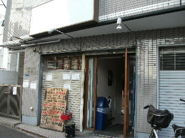
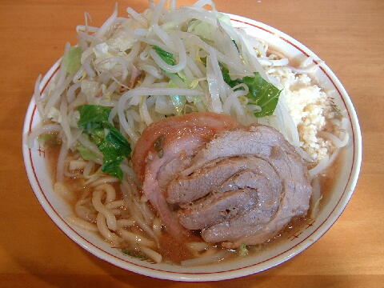

川崎市 中原区 木月 4-5-20
日
11：00〜24：00

店員は、黒縁メガネを掛けた店主（小金井二郎等でバイト）と助手。
黒コショウ（ギャバン）、二種類のお酢。
レンゲ有、ティッシュ無、エコ箸。
BGMは、AFN。
トッピングは、ラーメンはニンニク、ヤサイ、アブラ、カラメ。
豚星。 豚星。のTwitter
「ラーメン 豚星。」でヤフー検索
「ラーメン 豚星。」でヤフーリアルタイム検索
「ラーメン 豚星。」でグーグル検索

小ラーメン ニンニク
麺は、表面はツルツル、中心部はモチモチした食感の自家製太麺。
ぶたは、厚切りで大ブリの＠豚。豚星。と名乗っているだけあって美味い。
スープは、甘さが抑えられ豚出汁が良く出ているタイプ。
ヤサイは、モヤシ8：キャベツ2の割合。程好く茹でられていた。
ニンニクは、中粒に刻まれたニンニク。
ＰＣ店